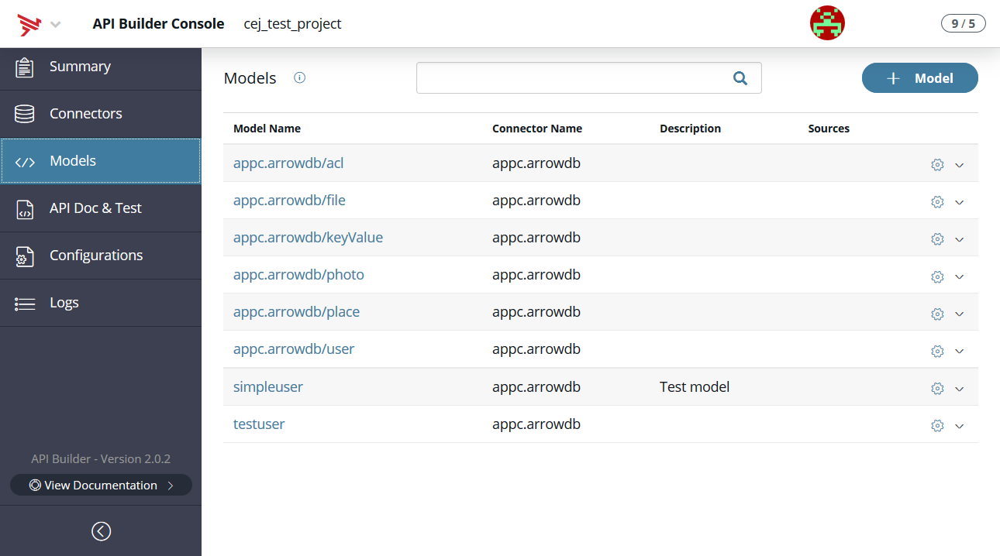
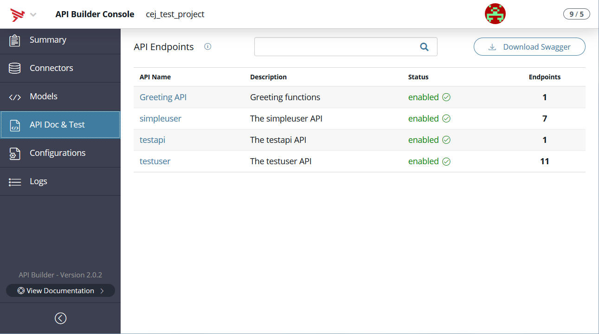

API Builder Admin Console
Introduction
The Admin Console allows you to create your application and manage data in your application.
By default, when you create a new project and run it locally, the Admin Console is enabled and available using the console path, that is, http://localhost:8080/console. You should navigate to the Admin Console in your web browser to view what this UI has to offer.

Configuration
To configure access to the Admin Console, open the project's ./conf/default.js file and edit the admin key. The admin key is a dictionary of key-value pairs that control the access to the Admin Console, such as restricting which users or organizations can access the Admin Console or the name of the Admin Console endpoint.
The admin dictionary can contain the following keys:
|
Key |
Type |
Default |
Description |
|
allowedHosts |
Array<String> |
- |
When the application is in production, restrict access to the Admin Console to the specified hosts |
|
apiDocPrefix |
String |
/apidoc |
Path to access the generated API docs |
|
css |
Array<String> |
- |
CSS files to inject to customize the styling of the Admin Console and API docs. Files must be relative to ./web/public/ folder or absolute URLs. |
|
customHTMLErrorPage |
String |
- |
HTML content to display for unauthorized access (HTTP 401 error code). |
|
disableAuth |
Boolean |
false |
Set to true to disable authorization to access the Admin Console console. |
|
disableAPIDoc |
Boolean |
false |
Set to true to not display the generated API Docs. |
|
enableAdminInProduction |
Boolean |
false |
Set to true to enable the Admin Console in the production environment. Note: as of CLI 6.0.0 and API Builder (formerly know as Arrow Builder) 1.8.8, this default value is false. Previously, it was set to true. |
|
enabled |
Boolean |
true |
Set to true to enable the Admin Console. |
|
js |
Array<String> |
- |
JavaScript files to inject to customize the styling of the Admin Console and API docs. Files must be relative to ./web/public/ folder or absolute URLs. |
|
prefix |
String |
/arrow |
Path to access the Admin Console. |
|
validEmails |
Array<String> |
developer's e-mail address |
When the application is in production, restrict access to the Admin Console to the specified accounts. |
|
validOrgs |
Array<Number> |
developer's organization |
When the application is in production, restrict access to the Admin Console to the specified organizations. |
Example:
{ admin: { // control whether the admin website is available enabled: true, // the prefix to the admin website prefix: '/arrow', // the prefix for the public apidocs website apiDocPrefix: '/apidoc', // if you set disableAuth, in production only your API docs will show up disableAuth: false, // if you set disableAPIDoc, you APIs docs will not show up (regardless of disableAuth) disableAPIDoc: false, // set to true to allow the admin website to be accessed in production. however, you will still need a // login unless disableAuth is false. if you set this to false, the admin website will not be enabled // when in production (still respects enabled above) enableAdminInProduction: false, // set the email addresses you want to enable while in production validEmails: ["jsmith@foo.com"], // set the organization ids you want to enable while in production validOrgs: [199546299] // custom error page for unauthorized access (HTTP 401 error code) customHTMLErrorPage: '<p>No, no, no...</p>', // set the list of IP addresses, IP ranges and hostnames from which connections to the admin interfaces // will be accepted allowedHosts: [ '127.0.0.1', 'myhost.axawy.com', '10.1.1.1/24', ] }}API Builder tabs
API Builder provides a list of tabs on the left-hand side that helps you get started building your applications. Click the different sections of the UI to hop between functions and features of API Builder.
Summary
The Summary tab lists basic information about your app like app name, version, description, author, license, and API key.
Connectors
Connectors are responsible for reading and writing data to a specific data source (e.g., Salesforce, MySQL, MongoDB, Azure, MSSQL or your own backend system). Each model has one connector. There are a number of pre-built connectors in the Platform Marketplace you can also create your own custom connectors.
See API Builder Connectors for details on how to get started, adding connectors, and connector projects.
Models
A Model is the data model, backed by a connector, and exposed as an API endpoint. A model can consist of other models or fields from other models. Once again, API Builder will generate API endpoints for your models by default. Changes to models require a restart.
The Models tab lets you create new models. The model build process involves the following steps:
-
Name your new model, select a connector, and add a description.
-
Add fields to your new model.
-
Select auto-generated API endpoints.

At the time of the 1.10.0 beta release, you may only build models when executing the project locally (in development). The build console will not work in production even if you enable the Admin Console in production.
See Create a new model section of API Builder Quick Start for instructions on how to create a new model.
API Docs & Test
On startup, API endpoints are automatically generated for all models as per their default configuration. An API provides a way for a client to access your application, such as GET <SERVER_ADDRESS>/api/users/query, execute custom logic, internally access the application's models and APIs, and return data back to the client application.
The API Doc & Test tab in the Admin Console contains generated docs of your application APIs including how to call the API, multiple examples and the ability to test the APIs. The generated docs use the information in the description fields of your JavaScript definition files to fill in some of the information.

Configurations
The Configurations tab displays the list of configuration files on the API Builder instance. You can edit the configuration files here.
Note: edits to these files will trigger a server restart once the files have been saved.
See API Builder Configuration for an example and settings.
Logs
The Logs tab displays a searchable and filterable list of logs generated from API Builder. When you invoke your API, their logs will be recorded locally, allowing you to test and debug your API. You can drill into the log entries to get more detail about the event, such as response time and headers.
Logs can be filtered by many methods that include by time, method type, status, and user input in the search bar. In addition to filtering, logs can be sorted by clicking on the column headers of Time, Method, URL, Status, and Duration (ms).

Filtering logs
by time, methods, and status. With the time filter, it defaults to All Time. You can choose to filter log events by past 10 minutes, hour, 12 or 24 hours, 7, 30, 60, or 90 days, and 1 year. With the methods filter, you can list events by All Methods (default), GET, POST, PUT, DELETE, PATCH, OPTIONS, and HEAD. And with the status filter, you can list events by All Status (default), Only Errors, Only Success, 100s, 200s, 300s, 400s, and 500s.
The Search bar will allow you to filter for specific events (e.g. specific URL hits, duration and date values, etc.).

Clear log
If desired, the log can be clear by clicking Clear Logs in the upper right-hand corner. You will be given a warning that this action is permanent. All logs will be deleted, are irretrievable, and are not archived.
Log pagination
The Logs tab lets you view the events by pagination (defaults to 10 items per page but it can be set to view 10, 20, 30, 40, 50, 80, or 100 items per page).
Information and search
Most API Builder tabs include the title of the page followed by an information icon and a search bar. The information icon, when clicked, will display a short description of it's function and/or purpose.
To locate a particular record, enter a search term in the search bar at the top to filter the table or click Advanced to restrict the search to a specific model field.
API Builder and Swagger
API Builder contains a Swagger definition that can be used to programmatically import APIs using tools such as Axway API Manager.
API Builder project Swagger
Your API Builder project Swagger file describes all of the APIs in the project that can be accessed via the following URL:
https://<SUB_DOMAIN_TOKEN>.cloudapp-enterprise.appcelerator.com/apidoc/swagger.jsonIndividual APIs
Each API also has a separate Swagger definition associated with the API. This is convenient if you only need access to one API and not expose the entire API set by your API project.
For example, if you have a model and associated APIs for account as follows:
var Arrow = require('arrow');var Model = Arrow.Model.reduce('appc.salesforce/Account', 'Account', { fields: { Name: { type: String, description: 'Account Name', maxlength: 255, required: true, optional: false }, Type: { type: String, description: 'Account Type', maxlength: 40 }, Phone: { type: String, description: 'Account Phone', maxlength: 40 } }, actions: [ 'create', 'read', 'update', 'delete', 'deleteAll' ]});module.exports = Model;The API Builder documentation for this API can be found via this URL:
https://<SUB_DOMAIN_TOKEN>.cloudapp-enterprise.appcelerator.com/apidoc/docs.html?apis/account.htmlThe Swagger definition for account can be found here:
https://<SUB_DOMAIN_TOKEN>.cloudapp-enterprise.appcelerator.com/apidoc/docs.json?apis/accountSwagger files for the API Builder project and individual APIs can be found on the Github page API Builder API Swagger Interface.